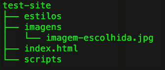

Requisitos básicos
O que precisamos para começar a fazer um site?
- Computador
- Um computador. Talvez isso soe óbvio para algumas pessoas, mas não basta um smartphone ou um tablet para escrever código. Antes de colocá-lo em prática, você precisa testá-lo o máximo possível para assegurar que o site funcionará em qualquer plataforma. Para isso, você vai precisar de um computador (com Linux, Windows ou Mac OS).
- Software (programa) editor de código
- Via de regra, você pode escrever código em um bloco de notas ou até em editores da linha de comando como vim. Só que usar um editor de códigos vai facilitar muito a sua vida por causa dos recursos que eles possuem, como auto-completar e destaque das palavras-chaves da linguagem. Você é livre para escolher o seu editor preferido. Distribuições GNOME do GNU/Linux já vem com o Gedit instalado, mas você também pode optar pelo Atom (software livre) ou pelo Sublime Text (comercial, com a vantagem de ter uma versão portátil para Windows que não precisa ser instalada).
- Web browser (navegador para a web)
- Você vai precisar de um navegador para testar seus sites, aliás, deve testar em tantos navegadores quanto possível. Os programas mais utilizados para navegação atualmente são: Google Chrome (proprietário!), Mozilla Firefox (software livre), Internet Explorer e Safari. Sugerimos que, se possível, você tenha ao menos dois navegadores instalados para teste. Tanto o Google Chrome quanto o Mozilla Firefox possuem ferramentas para desenvolvedores, que permitem: editar o código diretamente na página e simular o funcionamento do site em outros dispositivos, incluíndo smartphones e tablets. Para usuárias mais avançadas, o Firefox também possui uma edição com mais recursos chamada Firefox Developer Edition.
- Editor de imagens
- Em algum ponto, você vai sentir a necessidade de manipular as imagens que você quer colocar no seu site. Para isso, sugerimos editores livres como o GIMP e o Inkscape. Assim como o Gedit, esses dois já vem instalados em algumas distribuições GNU/Linux.
Com o navegador e o editor de códigos, já podemos começar a trabalhar na nossa página!
Planejar!
Antes que você faça qualquer coisa, você precisa de algumas ideias. O que seu site realmente vai fazer? Um site pode fazer praticamente tudo, mas primeiro você deve manter as coisas em um nível simples. Nós vamos começar criando um site simples com um cabeçalho, uma imagem e alguns parágrafos.
Para começar, você deve responder às seguintes questões:
- Sobre o que vai ser seu site? Você gosta de gatos, de cachorros ou de viagens?
- Qual informação você quer apresentar dentro do seu assunto? Escreva um título e alguns parágrafos e pense em uma imagem para ilustrar sua página.
- Como seu site deve parecer, em termos simples. Qual é a cor de fundo? Qual é o tipo de fonte apropriado? Formal, escrita à mão, negrito e gritante, sutil?
Rascunhando seu design
Agora pegue um papel e rascunhe como o seu site vai aparecer. Lembre-se de colocar: um cabeçalho (título), uma imagem e simular alguns parágrafos. Em sites reais e complexos, sempre começamos pelo rascunho e depois construímos a versão digital.

Cor do tema
Para documentos HTML, CSS e em outras aplicações em computação, nós usamos códigos hexadecimal para representar as cores. Você pode consultar a tabela de cores aqui e anotar o valor da coluna "RGB Hex". No código, o valor hexadecimal vai sempre ser precedido do sustenido(hashtag), ou seja, o azul, por exemplo, ficará assim: #0000CD
Imagens
Se você não tem as imagens que deseja colocar no site, um bom lugar para começar a procurar imagens livres é o Wikimedia Commons. Como não temos internet 😞, você vai ter de escolher entre as imagens disponíveis na pasta "imagens".
Lidando com arquivos
Um site consiste de muitos arquivos: conteúdo em texto, código, folhas de estilo, conteúdo em mídia (vídeos, fotos) e por aí vai. Quando você está construindo um site, você precisa guardar esses arquivos, ter certeza que eles conversam entre si e ter certeza que todo o conteúdo está certo antes de fazer o upload para um servidor. Vamos ver agora algumas questões que você deve ter em mente ao montar a estrutura do site.
Onde seu site vive no seu computador?
Quando você está trabalhando em um site localmente no seu próprio computador, você deve manter todos os arquivos relacionados em uma mesma pasta que pode ter subpastas e que reflete a estrutura dos arquivos do site que vai ser publicado em um servidor. A pasta-mãe pode estar em qualquer lugar que você quiser (inclusive em um uma mídia externa como um pendrive), mas você deve colocá-la em algum lugar de fácil acesso, talvez no Desktop, na sua pasta Home, ou no root do seu HD.
- Após escolher o local, crie uma nova pasta chamada projetos-web (ou algo do tipo). Essa é a pasta onde seus projetos de site viverão.
- Dentro dessa pasta, crie outra pasta para guardar seu primeiro site. Chame ela de site-teste (ou algo mais criativo).
Deixando de lado as maiúsculas e o espaço
Você vai perceber que pedimos para que você nomeie pastas e arquivos completamente em letras minúsculas e sem espaços. Isso acontece porque:
- Muitos computadores, particularmente servidores web, são case-sensitive. Então, por exemplo, se você colocar uma imagem no seu site em site-teste/MyImage.jpg, e então em um outro arquivo você tentar chamar site-teste/myimage.jpg, não vai funcionar.
- Browsers, servidores web e linguagens de programação não lidam bem com espaços. Por exemplo, se você usa espaços no nome do seu arquivo, alguns sistemas vão tratar o nome do arquivo como dois nomes. Alguns servidores vão substituir os espaços no nome do arquivo por "%20" (o código para espaço em URLs), quebrando seus links. É melhor separar palavras com traços ou underscores: meu-arquivo.html or meu_arquivo.html.
Qual estrutura seu site deve ter?
index.html: Esse arquivo é o que vai carregar a página inicial do seu site. No nosso caso, ele vai conter o conteúdo da sua página, ou seja, o código com os textos e imagens que as pessoas verão quando visitarem seu site. Usando o editor de código, crie um novo arquivo chamadoindex.htmle salve dentro da sua pastasite-teste(ou o nome que você deu ao projeto).- pasta
imagens: Essa pasta vai conter todas as imagens que você vai usar no seu site. Crie uma pasta chamadaimagens, dentro da sua pastasite-testee coloque ali as imagens que vai utilizar no site. - pasta
estilos: Mais pra frente, essa pasta vai conter os códigos CSS usados para dar estilo ao seu conteúdo (por exemplo, indicando cor de texto e de fundo). Crie uma pasta chamadaestilos, dentro da pastasite-teste. - pasta
scripts: Essa pasta vai conter todos os códigos JavaScript para adicionar funcionalidades interativas para seu site (ex.: botões que carregam dados quando clicados). Crie uma pasta chamadascripts, dentro da sua pastasite-teste.
Muito bem! Agora que temos a estrutura montada, podemos começar a editar a nossa página para a web.
Caminhos de arquivo
Para fazer arquivos conversarem entre si, você tem que fornecer um caminho de arquivo entre eles — basicamente uma rota para que um arquivo saiba onde outro está. Para demonstrar isso, nós vamos começar a editar nosso arquivo index.html e fazê-lo mostrar a imagem que você escolheu e colocou na pasta imagens. (se ainda não fez isso, faça agora!)
Abra o arquivo index.html no editor de código e copie o código abaixo. Não se preocupe com o significado — nós vamos olhar com mais detalhes essa estrutura posteriormente.
<!DOCTYPE html>
<html>
<head>
<meta charset="utf-8">
<title>My test page</title>
</head>
<body>
<img src="" alt="My test image">
</body>
</html>
A linha <img src="" alt="My test image"> é o código HTML que vai inserir uma imagem na página. Nós precisamos dizer ao HTML onde a imagem está. A imagem está dentro da pasta imagens, no mesmo diretório do index.html. Para trilhar o caminho de index.html para nossa imagem, o caminho é imagens/nome-da-sua-imagem. Não esqueça de incluir a extensão do arquivo. Por exemplo, nossa imagem é chamada firefox-icon.png, então, nosso caminho é imagens/firefox-icon.png. Insira o caminho do arquivo no seu código HTML, dentro das aspas do código img src="".
No nosso código ficou assim:
<img src="imagens/firefox-icon.png" alt="Minha imagem teste">
Salve seu arquivo HTML, então carregue em seu navegador. Você deve ver sua nova página mostrando a imagem.

Algumas regras gerais para caminhos de arquivo:
- Para linkar para um arquivo no mesmo diretório do arquivo HTML, apenas use o nome do arquivo, ex.:
my-image.jpg. - Para linkar um arquivo em um sub-diretório, escreva o nome do diretório na frente, mais uma barra, ex.:
subdirectory/my-image.jpg. - Para linkar um arquivo abaixo do arquivo HTML, use dois pontos. Então, por exemplo, se
index.htmlestiver dentro de uma subpasta desite-testeandmy-image.pngestiver dentro desite-teste, você pode fazer referência amy-image.pngemindex.htmlusando../my-image.png. - Você pode combinar isso como você preferir
../subdiretorio/outro-subdiretorio/my-image.png.
Sua pasta deve parecer algo do tipo:
HTML básico
Hypertext Markup Language (HTML), ou Linguagem de Marcação de Hipertexto, é o código que você usa para estruturar seu conteúdo web, dando significado e propósito. Por exemplo, meu conteúdo é organizado em parágrafos, ou em uma lista numerada? Eu tenho imagens na minha página? Eu tenho uma tabela de dados? Quem vai dar essas informações ao navegador é o HTML.
Mas o que é HTML realmente?
O HTML consiste de uma série de elementos, que você junta ao redor de diferentes partes do seu conteúdo para que ele apareça ou aja de um determinado jeito. Por exemplo, veja a seguinte linha de conteúdo:
Meu gato é muito rabugento.Se nós queremos oficialmente dizer que isso é um parágrafo, nós podemos envolver o elemento em um código (<p>):
<p>Meu gato é muito rabugento.</p>Anatomia de um elemento HTML
Vamos explorar o parágrafo mais profundamente.

As principais partes de um elemento são:
- A tag de abertura (opening tag): Consiste no nome do elemento (no caso, p), envolvido em chaves (chevrons) de abertura e fechamento. Isso demonstra onde o elemento começa, ou onde seu efeito se inicia — nesse caso, onde é o começo do parágrafo.
- A tag de fechamento (closing tag): Isso é a mesma coisa que a tag de abertura, exceto que inclui uma barra antes do nome do elemento. Isso demonstra onde o elemento acaba — nesse caso, onde fica o fim do parágrafo. Esquecer de incluir uma tag de fechamento é um dos erros mais comuns de iniciantes, e pode levar a resultados estranhos.
- O conteúdo (content): Esse é o conteúdo do elemento, que nesse caso é só texto.
- O elemento (element): A tag de abertura, com a de fechamento, com o conteúdo formam o elemento.
Atributos
Elementos também podem ter atributos, que parecem assim:

Atributos contém informação extra sobre o elemento, que você não quer que apareça no elemento de fato. Nesse caso, o atributo classe (class) permite que você dê ao elemento um nome de identificação (editor-note), que depois pode ser usado para dar ao elemento informações de estilo ou outras coisas.
Um atributo sempre deve ter:
- Um espaço entre ele e o nome do elemento (ou o atributo anterior, se o elemento já tiver um )
- O nome do atributo, seguido por um sinal de igual
- Aspas de abertura e fechamento, envolvendo todo o valor do atributo
Aninhando elementos
Você pode colocar elementos dentro de outros elementos também — isso é chamado aninhar (nesting). Se quisermos declarar que o gato é MUITO rabugento, podemos envolver a palavra "muito" em um <strong>, o que significa que a palavra deve ser fortemente enfatizada:
<p>My cat is <strong>very</strong> grumpy.</p>Contudo, você precisa ter certeza que seus elementos estão devidamente aninhados: no exemplo acima, nós abrimos o elemento <p> primeiro, depois o negrito, então temos que fechar o negrito primeiro e depois o p. A forma a seguir é incorreta:
<p>My cat is <strong>very grumpy.</p></strong>Elementos vazios
Alguns elementos não tem conteúdo, e são chamados elementos vazios. Considere o elemento <img> que temos na nossa HTML:
<img src="images/firefox-icon.png" alt="My test image">Ele contem dois atributos, mas não há tag </img> de fechamento, e não há conteúdo interno. Isso acontece porque uma imagem não envolve conteúdo para ter efeito em si mesma. Sua proposta é incorporar uma imagem na página HTML, no lugar que o código aparece.
Anatomia do HTML
Isso é o básico dos elementos HTML individuais, mas eles não são muito úteis por si só. Agora vamos ver como elementos individuais podem formar uma página inteira de HTML. Vamos voltar ao index.html e analisar o código que está lá.
Nós temos:
<!DOCTYPE html>— o doctype. Há muito tempo, quando o HTML era novo, doctypes eram criados para agir como links para um conjunto de regras que a página HTML tinha que seguir para ser considerada bom HTML, o que poderia significar checagem automática ou outras coisas úteis. No entanto, esses dias ninguém se importa sobre eles, e eles são somente um artifício histórico que precisa ser incluído para tudo funcionar bem. Por agora, é tudo o que você precisa saber.<html></html>—o elemento <html>. Esse elemento envolve todo o conteúdo da página e às vezes é conhecido como o elemento raiz.<head></head>— o elemento<head>. Esse elemento age como um recipiente de tudo o que você deseja incluir em uma página HTML que não é o conteúdo que você quer mostrar para quem vê sua página. Isso inclui coisas como palavras-chave e uma descrição que você quer que apareça nos resultados de busca, CSS para dar estilo ao conteúdo, declarações de conjuntos de caracteres, e mais.<body></body>— o elemento<body>. Contém todo o conteúdo que você quer mostrar ao público que visita sua página, seja texto, imagens, vídeos, jogos, faixas de áudio tocáveis ou seja lá o que for. Para algo aparecer na sua página, tem de ser colocado dentro do elemento body.
<meta charset="utf-8">— esse elemento aponta qual conjunto de caracteres seu documento deve usar para o utf-8, que inclui praticamente todos os caracteres conhecidos por todas as linguagens humanas. Basicamente, isso pode lidar com todo conteúdo em texto que você colocar. Não há razão para não escrever esse código, e vai te ajudar a evitar problemas depois.<title></title>— isso indica o título da sua página, que é o título que aparece no topo de navegador quando sua página carrega, e é usado para descrever a página quando você a coloca nos favoritos.
Imagens
Vamos voltar nossa atenção para o elemento de imagem novamente:
<img src="images/firefox-icon.png" alt="My test image">
Como dissemos antes, isso incorpora uma imagem na nossa página na posição que aparece. Isso é feito pelo atributo src (source), que contém o caminho para nosso arquivo de imagem.
Mas nós também incluímos um atributo alt (alternative) — que contém algum texto que descreve a imagem, e pode ser acessado por usuários que não podem ver a imagem, talvez porque:
- Eles são cegos ou parcialmente cegos. Usuários com deficiência visual significativa geralmente usam ferramentas chamadas Leitores de Tela para lerem o texto alt.
- Algo deu errado no código, o que significa que a imagem não pode ser mostrada. Por exemplo, tente deliberadamente mudar o caminho dentro do atributo
srcpara fazê-lo ficar incorreto. Se você salvar e recarregar a página, você deve ver algo assim no lugar da imagem:

A frase chave sobre texto alt é "texto que descreve a imagem". O texto alt que você escreve deve dar ao leitor o suficiente para dar uma boa ideia do que a imagem mostra, a partir da leitura. Então nosso texto "My test image" (minha imagem teste) não é bom. Um texto melhor poderia ser "A logo do Firefox: uma raposa em chamas envolvendo a Terra."
Marcando o texto
Cabeçalhos
Elementos de cabeçalho permitem que você especifique que certas partes do seu conteúdo são cabeçalhos ou sub-cabeçalhos do seu conteúdo. Do mesmo jeito que um livro tem um título principal e um título para cada capítulo e subtítulos dentro desses, um documento HTML também pode. HTML contém seis níveis de cabeçalho, <h6> embora você vá provavelmente usar mais o 3-4:
<h1>Meu cabeçalho principal</h1> <h2>Meu cabeçalho secundário</h2> <h3>Meu sub-cabeçalho</h3> <h4>Meu sub-sub-cabeçalho</h4>
Agora é sua vez: tente adicionar um título que tem a ver com sua página, acima do seu elemento <img>.
Parágrafo
Como explicado anteriormente, os elementos <p> contém parágrafos de texto; você vai usá-los bastante para marcar conteúdo de texto.
<p>Esse é um parágrafo isolado.</p>
Agora adicione seu texto com alguns parágrafos, logo abaixo do seu elemento <img>.
Links
Links são muito importantes — eles são o que fazem a Web ser de fato uma REDE. Para implementar um link, nós precisamos de usar uma âncora — <a> — o a é uma abreviatura de "anchor" ("âncora"). Para fazer algum texto dentro do seu parágrafo virar um link, siga esses passos:
- Escreva algum texto. Nós escolhemos o texto "Manifesto do Autonomia Feminista Tecnológica".
- Envolva o texto em um elemento <a>, assim:
<a>Manifesto do Autonomia Feminista Tecnológica</a>
- Dê ao elemento <a> um atributo href, assim:
<a href="">Manifesto do Autonomia Feminista Tecnológica</a>
- Escreva no valor do atributo o endereço que você quer linkar:
<a href="https://naoenoveladasoito.com.br/manifesto">Manifesto do Autonomia Feminista Tecnológica</a>
Você pode ter resultados inesperados se você omitir o https:// ou o http://, o chamado protocolo, no começo do endereço web (URL). Então depois de criar um link, clique nele para ter certeza de que ele está indo para onde você deseja.
href pode parecer uma escolha obscura para um nome de atributo, em uma primeira impressão. Se você está tendo problemas para lembrar do nome, lembre que significa hypertext reference. (referência em hipertexto)
Adicione um link para sua página agora, se você ainda não tiver feito.
Listas
Um monte de conteúdo da Web está organizado em listas, então o HTML tem elementos especiais para elas. Toda lista deve ter pelo menos 2 elementos. Os tipos mais comuns de listas são as ordenadas e as não-ordenadas:
- Listas não-ordenadas (unordered list) são para listas onde a ordem dos itens não importa, como uma lista de compras, por exemplo. Essas são envolvidas em um elemento
<ul>(ou elemento HTML de Lista desordenada) representa uma lista de itens sem ordem rígida, isto é, uma coleção de itens que não trazem uma ordenação numérica e as suas posições, nessa lista, são irrelevantes. Caracteristicamente, os itens em uma lista desordenada são exibidos com um marcador que pode ter várias formas, como um ponto, um círculo, ou um quadrado. O tipo de marcador não é definido na descrição HTML da página, mas na folha de estilos CSS associada. - Listas Ordenadas (ordered list) são para listas onde a ordem dos itens importa, como uma receita. Essas são envolvidas em um elemento
<ol>, que representa uma lista de itens ordenados.
Cada item dentro das listas é posto dentro de um elemento <li>. Este item deve sempre estar contido em um elemento pai: uma lista ordenada (<ol>), uma lista desordenada (<ul>), ou um menu (<menu>) e representa uma única entidade dessa lista.
Então, por exemplo, se nós quisermos tornar uma parte de um parágrafo uma lista:
<p>Alguns exemplos de redes sociais livres e abertas: Diáspora, Riseup/Crabgrass, Blogoosfero, GNUSocial. Elas respeitam a privacidade das usuárias, oferecem a quem usa controle sobre o conteúdo que é publicado e quem utiliza mantém o domínio sobre seus próprios dados e arquivos pessoais. </p>
Nós podemos fazer assim:
<p>Alguns exemplos de redes sociais livres e
abertas: </p>
<ul>
<li>Diáspora</li>
<li>Riseup/Crabgrass</li>
<li>Blogoosfero</li>
<li>GNUSocial</li>
</ul>
<p>Elas respeitam a privacidade das usuárias, oferecem a quem usa controle sobre o conteúdo que é publicado e quem utiliza mantém o domínio sobre seus próprios dados e arquivos pessoais. </p>Tente adicionar uma lista ordenada ou não-ordenada na sua página.
Conclusão
Se você seguiu todas as instruções até aqui, você deve terminar com uma página que pareça algo do tipo (você também pode vê-la aqui):
Se você ficar emperrado, pode sempre comparar seu trabalho com nosso código-exemplo finalizado.
Aqui, nós só arranhamos na superfície do HTML. Para descobrir mais, continue vindo nos encontros do Autonomia Feminista Tecnológica!
Autonomia Feminista Tecnológica
www.naoenoveladasoito.com.br
quitter.se/aufemaufem@openmailbox.org
Fontes:
Conteúdo adaptado de: Mozilla Developer Network - Começando na Web
Estatísticas de navegação: w3schools Browser Statistics
Tabela de cores RGB: RGB to Color Name Mapping (Triplet and Hex). Copyright © 2010 Kevin J. Walsh